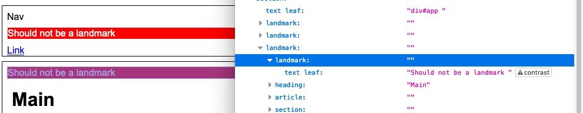

JAWS 2019 (august)
- With Chrome 75 exposes 2 banner landmarks. The first scoped to the body, and the second within the open non-modal
dialog element.
- With Edge 77 (dev) exposes 2 banner landmarks. The first scoped to the body, and the second within the open non-modal
dialog element.
- With IE11 fails to expose banner landmark. Existing bug noting that if there is a wrapping
div id=... between the body and the header, that JAWS will not correctly convert the header to a landmark.
- With Firefox 68.0.1 exposes 14 banner landmarks. This appears to potentially be an issue with both applications? Reviewing Firefox's accessibility tree some of the
header elements are not exposed as landmarks, but JAWS is still treats them as such. However, there are also many instances of header being improperly conveyed as a landmark in Firefox's tree.

NVDA 2019.1.1
- With Chrome 75 exposes 1 (correct) banner landmark.
- With Edge 77 (dev) exposes 1 (correct) banner landmark.
- With IE11 exposes 13 banner landmarks
- With Firefox 68.0.1 exposes 2 banner landmarks. The first being the expected banner scoped to the body. The second banner originates from the second
header element that is a direct child of the main element.
macOS 10.14.5 VoiceOver with Safari 12.1.1 and iOS 12.3.1 VoiceOver
Except for the header elements within section, article all others (12) were exposed as landmarks.
Open Webkit bug regarding headers
Open Webkit bug regarding headers, footers and other landmarks.
macOS 10.14.5 VoiceOver with Chrome 75
Exposes 2 banner landmarks. The first scoped to the body, and the second within the open non-modal dialog element.
TalkBack 7.3 on Android 8.1
- Chrome 75 exposes 2 banner landmarks. The first scoped to the body, and the second within the open non-modal
dialog element.
-
Firefox 68 exposed 2 or 3 banner landmarks. 1st was the expected banner landmark scoped to body. The second two were the header elements scoped to the main element. The first one of these may have been the main landmark, but as the role names were not announced, it is hard to tell.